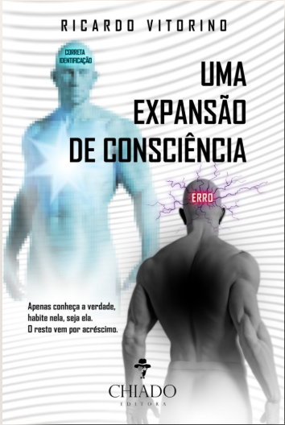
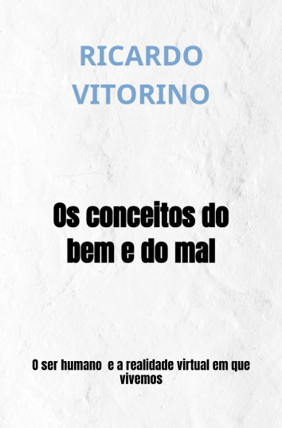

Meus Livros Publicados

Uma Expansão de Consciência: o Regresso ao mais Importante
Ano de Publicação: 2018
Neste livro, é feita uma correlação entre os mais avançados conhecimentos de Física sobre a realidade última, e os antigos conhecimentos sobre magia e espiritualidade. Místicos de todos os tempos souberam a verdade última, que esteve velada, mas que pode estar agora disponível para todos. Amplie os seus horizontes, à medida que expande as suas possibilidades, sempre em sintonia com o Todo.
Saber Mais / Comprar
Os conceitos do bem e do mal: O ser humano e a realidade virtual em que vivemos
Ano de Publicação: 2021
Interessa ao autor, que os leitores entrem no estado de consciência, em que percecionem a verdade por detrás do que é dito, muito para além do mérito de cada um. Méritos, cada um tem os seus, não se pretende pôr em causa esse fato. Todos somos capazes de fazer coisas incríveis, independentemente do que parece. O livro é uma ferramenta, pode ser usado como tantos outros até agora. A diferença de esta ferramenta, para outras ,tem que ver com a altura em que aparece. Com o despertar da consciência, aparece neste século finalmente uma oportunidade para um livro mais detalhado, concreto e sem parábolas. A ideia é, que se consiga tirar o verdadeiro significado das frases míticas dos mestres espirituais. A linguagem usada é maioritariamente a do novo testamento, mas existem referências a diferentes mestres. Mais que tudo, interessa provar, como a ciência está claramente a dizer o que sempre se soube, de forma a deixar o leitor com a certeza e convicção necessárias, para realizar o trabalho da sua própria libertação.
Saber Mais / Comprar